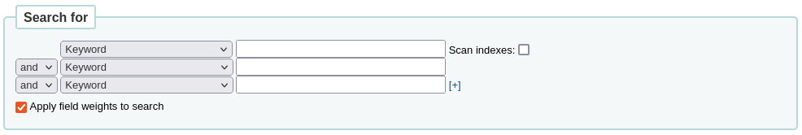
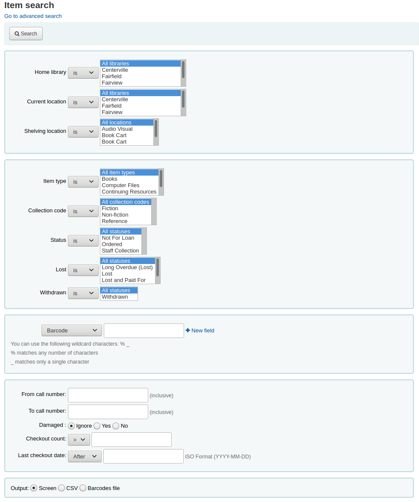

搜尋
基本搜尋
圖書館員最常看到的搜尋框是位於館員介面頁面頂端的持續搜尋框。
备注
If the IntranetAddMastheadLibraryPulldown system preference is set to ‘Add’, the basic search box in the staff interface will include a choice of library.
在OPAC中，圖書館的讀者會在大多數頁面的頂端看到一個搜尋框。
备注
If the OpacAddMastheadLibraryPulldown system preference is set to ‘Add’, the basic search box in the OPAC will include a choice of library and library group.
要搜尋，在搜尋框中輸入一個詞或多個詞。如果沒有指定搜尋索引，就會進行關鍵詞搜尋。
备注
你可以透過在表格中輸入一個詞並注意結果的數量來驗證這一點。然後，用一個小的變化重複搜尋：在搜尋詞的前面，輸入’kw=’，後面是相同的搜尋詞。結果將是相同的。
當你在搜尋框中有一個以上的詞時，Koha仍然會進行關鍵詞搜尋，但以布林邏輯的交集運算 ‘AND’。這將把你的搜尋範圍縮小到只符合所有單詞的記錄。
搜尋時，選擇你要尋找的主要術語，並將其輸入持續的搜尋框。
Koha將執行搜尋並 返回結果。
詞的順序並不影響檢索結果。
在搜尋框輸入過多的詞彙將得到較少的結果。
進階搜尋
當基本搜尋返回時，而有太多的結果，進階搜尋可以提供幫助。
到那裡： 搜尋或進階搜尋
進階搜尋頁面提供多種篩選機制。可以用布林邏輯的運算元 AND、OR 與 NOT；篩選館藏類型；篩選出版年與語言；篩選預期讀者、內容、格式或其他內容類型；篩選館藏地與取得性。
你可以根據需要使用多個部分，沒有一個是必須的，只要至少有一個搜尋詞或選擇一個限制。
The option to see the Search History within the Advanced Search feature exists if the system preference, :ref: EnableSearchHistory <enablesearchhistory-label> is set to Keep. This system preference controls whether the staff interface keeps search history for logged in users. The search history will be accessible under the link to your account at the top right of the staff interface and additionally under the Advanced Search option.
搜尋術語
在進階搜尋表單的第一部分中提供了多個搜尋框以同時搜尋不同的索引。
If the expandedSearchOption system preference is set to ‘show’, options to choose Boolean operators will be automatically displayed. If the preference is set to ‘don’t show’, clicking ‘More options’ will make those options appear.

在這一部分，你可以在下拉選單中的許多索引中進行選擇。此文字框逐一輸入關鍵詞。第二列鍵入布林邏輯運算元。包括 ‘and’、’or’ 與 ‘not’。再選擇搜尋的索引，以及關鍵詞。不夠的話，還可以按 [+] 增加更多的搜尋選項。
舉例來說，這是一個搜尋記錄，作者是Twain，標題包含’Huckleberry Finn’或’Tom Sawyer’。
布林邏輯運算元可以擴大或縮小搜尋範圍。
和：縮小結果範圍，因為搜尋將檢索包含所有搜尋詞的記錄。
或：擴大結果，因為搜尋將尋找所有搜尋術語的出現次數，無論它們是否在同一記錄中。
不：排除包含搜尋術語的記錄。
在進階搜尋表格中可用的索引有以下幾種(見下文 :ref:`Koha 搜尋索引<koha-search-indexes-label>`部分中關於索引和每個MARC欄位索引的更多訊息):
索引選項 |
索引搜尋 |
搜尋類型 |
|---|---|---|
關鍵詞 |
全部 |
關鍵詞 |
關鍵詞作為慣用語 |
全部 |
精確的慣用語 |
著者 |
作者 |
關鍵詞 |
作者作為慣用語 |
作者 |
精確的慣用語 |
公司名稱 |
公司-名稱 |
關鍵詞 |
會議名稱 |
會議-名稱 |
關鍵詞 |
公司名稱為慣用語 |
公司-名稱 |
精確的慣用語 |
會議名稱為慣用語 |
會議-名稱 |
精確的慣用語 |
個人姓名 |
個人-姓名 |
關鍵詞 |
個人名稱為慣用語 |
個人-姓名 |
精確的慣用語 |
題名 |
題名 |
關鍵詞 |
題名為慣用語 |
題名 |
精確的慣用語 |
期刊題名 |
題名-期刊 |
關鍵詞 |
主題 |
主題 |
關鍵詞 |
主題為慣用語 |
主題 |
精確的慣用語 |
條碼 |
條碼 |
關鍵詞 |
排架位置 |
地點(見備註) |
關鍵詞 |
標準號碼 |
識別碼-標準 |
號碼 |
ISBN |
國際標準書號 |
國際標準書號 |
ISSN |
國際標準期刊編號 |
號碼 |
索書號 |
本地-分類 |
關鍵詞 |
語言 |
ln |
關鍵詞 |
說明/評論 |
說明 |
關鍵詞 |
課程 |
課程 |
關鍵詞 |
出版者 |
出版商 |
關鍵詞 |
出版地 |
pl |
關鍵詞 |
出版日期 |
出版日期 |
日期 |
採訪日期 |
採訪日期 |
日期 |
备注
如果在 LOC容許值，索引的位置就是容許值代碼。
館藏類型、位置和館藏限制
在搜尋框下，有一些標籤允許你按館藏類型、書架位置或館藏來限制你的搜尋。
The tabs shown here, as well as their order are controlled by the AdvancedSearchTypes system preference (or OpacAdvancedSearchTypes for the advanced search form in the OPAC).
备注
In the OPAC, this section can be hidden with the OpacAdvSearchMoreOptions or the OpacAdvSearchOptions system preferences (uncheck the ‘Item types’ option).
在館員介面上不可能隱藏它。
在搜尋時，可以在多個選項卡中檢查多個選項。在這種情況下，同一標籤的選項用OR運算符進行搜尋，不同標籤的選項用AND運算符進行搜尋。例如，如果使用者檢查了 ‘書籍’ 和 ‘參考資料’ 館藏類型以及 ‘兒童區’ 和 ‘普通書架’ 的書架位置，這些選項將被這樣連結：（書籍或參考資料）和（兒童區或普通書架）。
對於每個標籤，都會搜尋以下索引(關於索引的更多訊息，以及每個索引中的MARC欄位，請參見下面的 :ref:`Koha 搜尋索引<koha-search-indexes-label>`部分):
標籤 |
索引搜尋 |
|---|---|
館藏類型 |
類型 |
排架位置 |
位置 |
Collection |
ccode |
日期和語言限制
The next section only appears if you click ‘More option’ or if the expandedSearchOption system preference is set to ‘show’. It allows you to limit your search based on publication date or language.
备注
In the OPAC, this section can be hidden with the OpacAdvSearchMoreOptions or the OpacAdvSearchOptions system preferences (uncheck the ‘Publication date’ or the ‘Language’ option).
在館員介面上不可能隱藏它。
‘年份’ 的限制允許你搜尋在特定年份以及一系列年份出版的題名。
‘2005’ 將搜尋 2005 年出版的題名
‘2005-2010’ 將搜尋2005年至2010年期間出版的題名（包括2005和2010）
‘-2010’ 將搜尋 2010 年及之前出版的題名
‘<2010’ 將搜尋 2010 年之前出版的題名（不包括 2010 年）
‘2005-’ 將搜尋 2005 年及之後出版的題名
‘>2005’將搜尋2005年以後出版的題名（不包括2005年）
‘語言’ 和 ‘原始語言’ 限制允許您搜尋特定語言的題名或從特定語言翻譯的題名。
备注
By default, the languages drop-down menus are populated by all languages. It is possible to limit the list with the AdvancedSearchLanguages system preference.
對於每個搜尋欄位，都會搜尋以下索引 (關於索引的更多訊息，以及每個索引中包含哪些MARC欄位，請參見下面的 :ref:`Koha 搜尋索引<koha-search-indexes-label>`部分):
搜尋欄位 |
索引搜尋 |
|---|---|
年 |
出版日期 |
語言 |
ln |
原始語言 |
原文 |
次類型的限制
下一節允許你用編碼值來限制你的搜尋。
备注
In the OPAC, this section can be hidden with the OpacAdvSearchMoreOptions or the OpacAdvSearchOptions system preferences (uncheck the ‘Subtypes’ option).
在館員介面上不可能隱藏它。
‘受眾群體’ 下拉選單可用於將結果限制為特定目標受眾群體。
學齡前
主要
青少年前期
青年
成人
特別的
一般
少年
‘內容’ 下拉選單可用於將結果限制為特定類型的內容。
小說
非小說
傳記
音樂性錄音資料
非音樂性錄音資料
‘格式’ 下拉選單可用於將結果限制為特定類型的格式。
正常列印
大字印刷
點字
音樂光碟
卡帶錄音
VHS 錄影帶 / 錄影卡帶
DVD / 影碟
軟體光碟
網站
‘其他內容類型’ 下拉選單可用於進一步將結果限制為特定類型的內容。
摘要/總結
參考書目
目錄
百科全書
手冊
法律條文
索引
專利文件
唱片分類目錄
立法
論文
調查
審核
程式化文字
影片目錄
指南
統計
技術報告
法律個案與個案說明
法律報告與摘要
條約
對於每個搜尋欄位，都會搜尋以下索引 (關於索引的更多訊息，以及每個索引中包含哪些MARC欄位，請參見下面的 :ref:`Koha 搜尋索引<koha-search-indexes-label>`部分):
搜尋欄位 |
索引搜尋 |
|---|---|
受眾 |
ta |
內容 |
如果生物 rtype |
格式 |
ff7-01-02 |
其他內容類型 |
ctype |
位置與可及性
‘位置和可用性’ 部分允許您進一步限制搜尋。

备注
In the OPAC, this section can be hidden with the OpacAdvSearchMoreOptions or the OpacAdvSearchOptions system preferences (uncheck the ‘Location and availability’ option).
在館員介面上不可能隱藏它。
可以勾選 ‘限於可用館藏’ 的框，以便在結果中只顯示可取用的館藏。
警告
‘限制可用的館藏’ 選項只刪除目前已借出的館藏。它 不會 刪除被撤回、丟失或其他不被借出的館藏。
‘個別圖書館’ 下拉選單可用於將搜尋限制在一個特定的圖書館。
如果你有 :ref:`圖書館組<library-groups-label>`被選為搜尋組，它們將出現在’圖書館組’下。
备注
By default, the location limit looks for the item’s home library. This can be changed with the SearchLimitLibrary system preference.
對於每個搜尋欄位，都會搜尋以下索引 (關於索引的更多訊息，以及每個索引中包含哪些MARC欄位，請參見下面的 :ref:`Koha 搜尋索引<koha-search-indexes-label>`部分):
搜尋欄位 |
索引搜尋 |
|---|---|
可用館藏 |
外借中 |
個別圖書館或圖書館群組 |
homebranch holdingbranch |
排序
最後，你可以選擇如何對結果進行排序。
备注
In the OPAC, this section can be hidden with the OpacAdvSearchMoreOptions or the OpacAdvSearchOptions system preferences (uncheck the ‘Sorting’ option).
在館員介面上不可能隱藏它。
預設排序是在 :ref:`defaultSortField和defaultSortOrder <defaultsortfield-and-defaultsortorder-label>`系統偏好中設定的，但你可以選擇按作者、按標題、按書號、按日期或按受歡迎程度（使用在館藏表中發現的總發行量訊息）進行排序。
相關性：當使用 ElasticSearch 時，相關性是透過欄位的權重和每個欄位中搜尋詞的出現次數來計算的。
受歡迎程度：這種排序使用問題索引，即記錄每個館藏中的問題數量。
作者：這種排序使用作者索引
索書號：該排序使用cn-sort索引，它是使用分類方案和索書號建立的。
出版/版權日期：該排序使用出版日期索引
採訪日期：該排序使用採訪日期的索引
題名：這種排序使用題名索引
在下面的 :ref:`Koha 搜尋索引<koha-search-indexes-label>`一節中，可以看到更多關於索引和每個 MARC 欄位被索引的訊息。
Opac browse search
When Elasticsearch is used, a browse search option is available on the Opac. It is enabled using the OpacBrowseSearch system preference. The option then appears as a link in the Opac “More searches” area.
On the browse search page, enter your terms in the “Search for” box. Use the “Search type” menu to select either the Author, Subject or Title search. Underneath the search box, radio buttons allow you to choose between an “Exact”, “Fuzzy” or “Really fuzzy” search.
When you land on the page, the “Author” search type and “Fuzzy” search mode are selected by default.
When you click the search button, you will see a list of results that begin with the text you entered in the search box. Clicking on a result opens a section listing the catalogue records that match this search result. From there, it is possible to click through to the full record.
搜尋結果
搜尋結果的數量將顯示在結果頁面。
還會有一個返回進階搜尋螢幕的連結，以編輯搜尋。
If the SavedSearchFilters system preference is enabled, there will also be a link to save the search as a search filter.
There is the possibility to search within results. This search box will take the query and add it as a limit to the previous search.
If StaffHighlightedWords is set to ‘highlight’, the search term(s) will be highlighted in yellow with red text in every record. You can remove the highlighting by clicking the ‘Unhighlight’ link at the top of the page.
备注
強調顯示並不代表搜尋詞在記錄中的位置，它只是在頁面上可以找到的任何地方強調顯示這串字符。
預設情況下，搜尋結果將根據 OPACdefaultSortField and OPACdefaultSortOrder 系統偏好值進行排序。要改變這一點，你可以從右邊的下拉選單中選擇另一種排序方法。
每個搜尋結果都顯示在一個表格中，左欄為書目訊息，右欄為館藏訊息。
Under each title in the list, a series of values from the record’s leader will appear. It is important to note that this has nothing to do with the item types or collection codes assigned to the items, this data is all pulled from the record’s fixed fields. This can be turned on or off with the DisplayIconsXSLT system preference.
在右欄中，顯示附加到記錄的館藏的可用性和訊息。
备注
即使您篩選了一個圖書館，擁有該館藏的所有圖書館都會出現在搜尋結果中。
館藏的可用性取決於它們的狀態。 以下將顯示為可用：
可用（未借出，無特定狀態）
預約中
在館藏處於 ‘等待’ 狀態之前，館藏的預約狀態並不影響該館藏是否 ‘可用’。在架子上被放置的館藏將顯示為可用，直到館員將其從架子上取下，並檢查該館藏以確認放置，並將其放在一邊等待取件。
以下將顯示為不可用：
The availability of items is displayed only for the first twenty items in the record. This number can be changed with the MaxSearchResultsItemsPerRecordStatusCheck system preference.
If records have a lot of items, only twenty items will be displayed in the search results by default. This number can be changed with the maxItemsInSearchResults system preference.
如果封面圖片相關 :ref:`強化內容系統偏好<enhanced-content-system-preferences-label>`被啟用，封面圖片將出現在搜尋結果旁邊。
分面
在左邊，可以篩選，或分面，可以精簡你的搜尋。

目前可用的分面包括：
在館內
著者
館藏類型
位置
地點 (地理名詞標題)
集叢
主題 (主題標目)
館藏(館藏代碼)
所屬圖書館、館藏圖書館或兩者兼俱
备注
This depends on your setting for the DisplayLibraryFacets system preference.
題名 (劃一題名標題) (僅限斑馬)
备注
當使用Elasticsearch時，可以從 :ref:`搜尋引擎配置頁面<search-engine-configuration>`中刪除面並重新排序。
By default, facets are constructed using the first twenty records. You can customize this with the maxRecordsForFacets system preference.
If you want to show the number of records that correspond to each facet next to it, you can make it appear with the displayFacetCount system preference. Note that this number is dependent on the maxRecordsForFacets system preference.
When there are more than five facets in a category, a ‘Show more’ link will appear. By default, this link will show up to twenty facets. You can change the maximum number of facets shown with the FacetMaxCount system preference.
By default, when facets are longer than twenty characters, will be truncated. You can change the number of character after which a facet is truncated with the FacetLabelTruncationLength system preference.
备注
當使用Elasticsearch時，分面不會被截斷。這僅適用於斑馬使用者。
By default, facets in each category are ordered alphabetically. You can change the order with the FacetOrder system preference.
When using UNIMARC, the default separator for authors’ last and first names in the facets is a comma, but you can change this using the UNIMARCAuthorsFacetsSeparator system preference, if necessary.
备注
If you have any search filters, they will appear above the facets.
對搜尋結果的操作
上方的結果數量下，有多個按鈕針對選定的紀錄續作業。
全選：全選頁面的紀錄。
全部清除：清除已選的頁面紀錄。
不強調：移除搜尋術語的紅/黃色強調。
If StaffHighlightedWords is set to ‘highlight’, the search term(s) will be highlighted in yellow with red text in every record. The ‘Unhighlight’ link removes the highlighting.
新增至書車：把選定的紀錄新增至 書車.
备注
The intranetbookbag system preference needs to be set to ‘Show’ in order for that button to appear.
新增至虛擬書架：將選定的紀錄新增至 虛擬書架。
預約：預約選定的紀錄。
瀏覽選定的紀錄：進入選定紀錄的詳情。按 ‘下一個’ 或 ‘前一個’ 進入下個選定的紀錄。
备注
The BrowseResultSelection system preference needs to be enabled in order for that button to appear.
Z39.50/SRU 搜尋：以預填的搜尋術語，在另個視窗開啟 Z39.50/SRU 搜尋。
編輯：批次編輯、批次刪除或合併選定的記錄。
排序：改變排序欄位和順序。這些選項與上面 :ref:`排序部分<advanced-search-sort-label>`中描述的選項相同。
备注
預設的排序是依照 :ref: defaultSortField and defaultSortOrder <defaultsortfield-&-defaultsortorder-label> 系統偏好的設定。
在每筆紀錄的下方，還有更多其他操作連結：
預約：連結到該記錄 ‘預約’ 分頁。
催還：連結到該記錄的 ‘催還’ 標籤。
新增至書車：把選定的紀錄新增至 書車.
备注
The intranetbookbag system preference needs to be set to ‘Show’ in order for that link to appear.
請求論文：連結到該記錄 ‘論文請求’ 分頁。
編輯紀錄：連結到紀錄的 MARC 框架。
編輯館藏：連結到紀錄的館藏清單。
OPC 檢視：連結到紀錄的 OPAC 詳情頁面。
备注
The ‘OPAC view’ option needs the OPACBaseURL system preference to be properly set.
Search filters
Search filters are custom searches or filters that can be applied to search results.
This functionality is enabled on using the SavedSearchFilters system preference.
Adding search filters
Once the SavedSearchFilters system preference is enabled, there will be a new option on the search results page to create a new search filter from this search.
To create a new search filter:
Search the catalog from the staff interface basic search or advanced search.
Click ‘Save search as filter’ at the top of the results.
A form will pop up.
Visibility
Show on OPAC: If checked, this search filter will be available on the OPAC.
Show in staff interface: If checked, this search filter will be available in the staff interface.
Name: Enter the name of the search filter. This name will appear to staff and OPAC user, depending on where this search filter is available.
Click ‘Save’ next to the name field.
Search filters will be displayed before the facets in the search results page, in the staff interface or OPAC, depending on visibility.
All search filters can be managed in the search filter administration section.
Editing existing search filters
Once you have existing search filters, the way to edit them is basically the same as adding a new one, but you are replacing instead of adding
Search the catalog from the staff interface basic search or advanced search.
Click ‘Save search as filter’ at the top of the results.
The form will pop up.
Choose which search filter to replace from the ‘Replace existing search filter’ drop-down menu.
Click ‘Replace’ next to the drop-down menu.
To further edit search filters, visit the search filter administration page.
搜尋紀錄
If the EnableSearchHistory system preference set to keep the search history, you can access this information by clicking on your username in the top right of the staff interface and choosing ‘Search history’.
在此頁面可看到您的書目搜尋記錄
及您的權威搜尋記錄。
在搜尋紀錄頁面，可以透過點擊搜尋術語重新啟動搜尋。
也可以透過選擇以前的搜尋並點擊表格頂端的 ‘刪除’ 連結來刪除它們。
進階搜尋文法
以下的搜尋指令可以加在鍵詞搜尋盒的語彙之前，篩選傳回的資料
ti: 題名搜尋
如，ti:臺灣
su: 主題搜尋
如，su:美食
pb: 出版社搜尋
如，pb:遠景
au: 著者搜尋
如，au:張大春
su-geo: 地名主題
如，su-geo:雲林 and kw:人文 and kw:旅行
bc: 條碼
如，bc:502326000912
lex: lexile
層次 lex:510
搜尋指南
本章以圖表簡單介紹 MARC21 資料庫的組態，以及搜尋準則。此章描述的索引欄位與書目資料有關，不是權威資料庫的索引。
Zebra 索引
Koha 資料庫的索引使用 GPL 2.0 授權的 Zebra 自由軟體。Zebra 的官方文件稱：
“…Zebra 是高效能的通用結構化索引與搜尋引擎。可讀入多種格式的記錄 (如 email、XML、MARC 等) 經由強力組合的布林邏輯搜尋與關連排序自由文字詢問近用這些記錄。
Zebra 支援大型資料庫 (數千萬筆記錄、數十GB的資料)。允許安全、增量資料地更新即時系統。因為 Zebra 支援工業標準的資訊擷取協定，Z39.50，可以使用支援標準化的商業授權或自由軟體式的程式與工具，搜尋 Zebra 資料庫，…” Zebra - User 使用指南與參考手冊，第 1 頁，https://software.indexdata.com/zebra/doc/idzebra.pdf
本章以圖表簡單介紹 MARC21 資料庫的組態，以及搜尋準則。此章描述的索引欄位與書目資料有關，不是權威資料庫的索引。
說明
本章以圖表簡單介紹 MARC21 資料庫的組態，以及搜尋準則。此章描述的索引欄位與書目資料有關，不是權威資料庫的索引。
索引組態
Koha 索引時用到三個組態檔。
第一個組態檔 (etc/zebradb/biblios/etc/bib1.att)包括 Z39.50 bib-1 屬性清單，以及 Biblio Indexes、Items Index、Fixed Fields 與其他特殊索引的 Koha 在地屬性。Z39.50 Bib-1 profile 由數個屬性類型構成：Use、Relation、Position、Structure、Truncation、Completeness。bib-1 ‘Use’ 屬性以圖表示；其他的屬性主要供搜尋之用。有 150 多種屬性供索引集合使用，幾乎不可能全部使用。其他五個屬性供進一步搜尋的設定之用，不在本文詳述。請參照在 http://www.loc.gov/z3950/agency/defns/bib1.html 的 Bib-1 attributes 詳情。
第二個檔案是 etc/zebradb/marc_defs/[marc21|unimarc]/biblios/record.abs 若您使用 grs1 索引 [the default until 3.16] 或 etc/zebradb/marc_defs/[marc21|unimarc]/biblios/biblio-koha-indexdefs.xml 若您使用 dom 索引 [3.18 的預設]。任何檔案都包括摘要語法對應至 MARC21 欄號設定至選定的 Use Attributes。為啟用更精準的 xml 檔案需轉換至 biblio-zebra-indexdefs.xsl，參見 biblio-zebra-indexdefs.xsl 標頭瞭解詳情。此檔案設定規則提供 Bath 第 0 層與第 1 層服務，包括著者、題名、主題、鍵詞與標準號碼的精準服務 (LCCN、ISBN、ISSN等)
第三個組態檔 (etc/zebradb/ccl.properties) 是通用指令語言欄位對應表。此檔案包括 bib-1 屬性集檔與摘要檔及新增限義詞，通常稱為索引名稱。此資料庫的限義詞或索引有：pn, cpn, cfn, ti, se, ut, nb, ns, sn,lcn, callnum, su, su-to, su-geo, su-ut, yr,pubdate, acqdate, ln, pl, ab, nt, rtype, mc-rtype, mus, au, su-na,kw, pb, ctype 與 an。
以 Koha 索引表 把前述三個檔案的內容歸納成可讀性較高的內容。前兩欄是 Z39.50 屬性與對應至 Z39.50 bib-1 屬性檔的 Z39.50 名稱。第三欄是指出各 MARC 欄號對應屬性的 MARC 欄號索引。第四欄內部 CCL 詢問搜尋縮寫的限義詞。接著的說明則定義 ‘限義詞’ 的內容。
限義詞用於指引搜尋至特定的搜尋索引，如題名 (ti) 與著者索引 (au) 等。CCL 標準本身不指定限義詞的集合，但建議若干簡短的標記。使用者可以客製化 CCL 的剖析以支持特定的限義詞集合反應當前的目標群。習慣上，限義詞可能對映至 BIB-1 屬性集裡的特定使用者屬性。也可能設定其他的屬性，如結構屬性之類。
部份 MARC 的欄位，已經被指定特定的用途。包括：
祗有三位數的欄號 (如：100)，表示其所有的分欄均可被搜尋。因此，鍵入 ‘Jackson’ 做為著者搜尋，實際上傳回以 Jackson 為姓或名的款目。
三位數的欄號跟著錢號 ‘$’ 以及字母(600$a)，表示祗搜尋該字母 ‘a’ 的分欄。
三位數的欄號跟著冒號 ‘:’ 以及一個字母 (240:w)，表示可以篩選的搜尋。冒號後的字母表示搜尋的方式，最常見的有：’w’ (word)、’p’ (phrase)、’s’ (sort)、以及 ‘n’ (numeric)。
出現在表單的 MARC 欄號、分欄與固定欄位內容都是被索引的。每個屬性列並未對應至特定的限義詞 (索引) - 美國國會圖書館控制號，第九列是其中一例。然而，每個被索引的字 (前後空白的字串)，可以經由鍵詞 (kw) 搜尋。所以，儘管美國國會圖書館控制號並未被索引，仍可搜尋美國國會圖書館控制號因為欄位 010 指定給美國國會圖書館控制號屬性。確認的方法是，於搜尋盒鍵入 72180055。就會找到 Isaac Asimov 寫的 Ther gods themselves 一書。
在屬性 8822 與 8703內可看到索引的固定欄位細目內容。這些屬性係限制使用。目前的固定欄位屬性代表 BK 代碼。若有需要可定義其他的代碼格式。
館藏搜尋
可用館員介面的館藏搜尋引擎尋找特定的館藏。
到那裡： 搜尋 > 館藏搜尋
可從館員介面的進階搜尋頁面上方的 ‘進入館藏搜尋’ 連結，執行它。

這些連結都可以開啟特定的搜尋引擎。

使用搜尋表單找到的指定館藏清單，可以顯示在螢幕、匯出為 CSV 格式檔案或匯出為條碼檔案。
從管理模組的 館藏搜尋欄位 區塊，可以新增搜尋欄位至此表單。
可以使用上方的篩選單縮小螢幕上的搜尋結果。
通用指令語言搜尋
Koha 以通用指令語言 (Common Command Language, CCL, ISO 8777) 做為內部搜尋協定。以圖形介面開始搜尋，搜尋者並不知道可用及使用的索引、運算元與限制。搜尋者知道搜尋索引的位置後，雖然可以使用進階搜尋，以取得更精準的結果；但很多圖書館的使用者及館員仍習慣使用命令的基本結構。本節文件說明 Koha 命令的基本結構，索引、運算元與限制在圖形介面裡，當成同一件事。
索引
CCL 標準本身並未指定特別的限義詞 (索引) 集合，祗建議若干簡短的標記，如：’ti’、’au’ 與 ‘su’ 等。Koha擁有自己的預設索引集合；使用者可以依據自身的需要新增必要的索引客製化它。限義詞 (索引) 以 Z39.50 Bib-1 屬性集對應至特定的使用-屬性。完整的 Z39.50 Bib-1 屬性參見 http://www.loc.gov/z3950/agency/defns/bib1.html。
標準的 Koha 索引集就是 MARC21 索引規則。Koha 定義的索引與其他圖書館自動化系統無異。Z39.50Bib-1 Attribute 對應的索引如下：
Bib-1 屬性 |
限義詞 (索引) |
|---|---|
Personal-name |
pn |
Corporate-name |
cpn |
Conference-name |
cfn |
題名 |
ti |
Title-series |
se |
Title-uniform |
ut |
ISBN |
nb |
ISSN |
ns |
本地編號 |
sn |
Local-classification |
lcn and callnum |
主題 |
su, su-to, su-geo, su-ut |
Pubdate |
yr,pubdate |
Date-of-Acquisition |
acqdate |
語言 |
ln |
Place-of-publication |
pl |
Abstract |
ab |
說明 |
nt |
Record-type |
rtype, mc-rtype, mus |
著者 |
au, aut |
Subject-person-name |
su-na |
Any (keyword) |
kw |
出版者 |
pb |
Content-type |
ctype |
Koha-Auth-Number |
an |
Author-personal-bibliography |
aub |
Author-in-order |
auo |
表單：屬性
參照至 Koha 索引圖表 <koha-search-indexes-label> 由 MARC21 欄號對映至每個 Bib-1 屬性與索引的組合。
讀者範例
aud:a 幼兒園
aud:b 小學
aud:c 青少年前期
aud:d 青少年
aud:e 成年人
aud:f 特別
aud:g 一般
aud:j 少年
內容範例
fic:1 小說
fic:0 非小說
bio:b 傳記
mus:j 音樂錄音
mus:I 非音樂記錄
搜尋語法
搜尋時，單字搜尋產生大量資料。以字串搜尋，則有效的縮小搜尋結果。Koha 自動使用 ‘and’ 布林運算元取得精確的結果。使用布林運算元可縮小搜尋結果至指定的著者或題名或主題，沒有明確的方法可以達成此結果。當然，圖書館使用者可以使用進階搜尋頁面；若會使用通用指令語言指令，能更精準的找到資訊。
CCL 搜尋語法有一定的順序。雖然也可用於基本搜尋，但更適用於 進階搜尋，全面控制搜尋的結果。首先鍵入索引代碼，然後是等號，再來是搜尋的詞彙，以下是幾個範例。
ti=principles of accounting
au=brown joseph
su=poetry
su-na=Shakespeare
kw=marlin
以布林邏輯的交集 ‘and’、聯集 ‘or’ 或差集 ‘not’ 運算元，組合若干搜尋詞彙，篩選搜尋的結果。以下是使用布林邏輯運算元範例。
ti=principles of accounting and au=brown joseph
su=poetry not su-na=Shakespeare
kw=communication and su=debate
可以選擇搜尋開頭的字元或若字串
ti,first-in-subfield=C (will show you all titles that start with the letter ‘C’)
以下的鍵詞可搜尋其他位置的內容：
rtrn : 右方截切
ltrn : 左方截切
lrtrn : 左右切截
st-date : 鍵入日期
st-numeric : 鍵入數字 (整數)
例如：正確搜尋整個分欄 (不包括 icu)
phr : 搜尋分欄的任何地方
startswithnt : 分欄的起始
特定的索引與布林邏輯運算元，祗是達成進階搜尋的方法之一。還可以把搜尋詞彙定義為字串，直接搜尋題名、著者或主題。它的語法是 index,phr=search words。
搜尋 ‘supreme court’ 的結果，做為說明各種搜尋類型之用。此結果說明搜尋索引與用字順序對搜尋結果有不同程度的影響。在此例中祗解釋搜尋結果數與搜尋本身。此搜尋內容以單引號納入。


可以在搜尋裡使用限制詞。常用的限制詞包括日期、語文、記錄類型與館藏類型。在進階搜尋裡，您可按日期盒限制搜尋的範圍。同樣的限制也可以語法方式在以下的範例中納入 CCL。所有的
按日期：su=supreme court and yr,st-numeric=>2000

以時間限制時，可以使用 ‘>’ (大於)、’<’ (小於)、’=’ (等於)、或 ‘yyyy-yyyy’ (範圍) 等符號。
按館藏類型：su=nursing and itype:BK

每個圖書館在流通組態裡設定的館藏類型不儘相同。設定時，每個館藏類型都有自己的代碼與名稱。其名稱將顯示在進階搜尋頁面。代碼則適用於 CCL 搜尋限制，以 ‘itype:x’ 型式出現，’x’ 即為代碼。Koha 預設的館藏類型祗供參考，應該編輯它以反應真實的館藏，所以您的館藏限制應不同於初始的設定。初始的館藏類型限制詞如下。
itype:BKS 圖書、小冊子、練習簿
itype:SR 音樂卡帶、音樂 CD
itype:IR 圓圈裝
itype:CF CD-ROMs、DVD-ROMs、一般線上資源
itype:VR DVDs、VHS
itype:KT 特殊教學資料
itype:AR 模型
itype:SER 連續性出版品
按格式：su=supreme court not l-format:sr

格式限制源自於 LDR、006 與 007 位置的內容。這些格式定義如下。
l-format:ta 正常列印
l-format:tb 大字本
l-format:fk 點字
l-format:sd 音樂光碟
l-format:ss 卡式錄音
l-format:vf VHS 錄影帶
l-format:vd DVD 錄影
l-format:co CD 軟體
l-format:cr 網站
按內容類型：su=supreme court not ctype:l

內容類型取自 MARC 欄位 008 的位址 24-27。
兩種限制類型不在本文件的範圍內。即讀者與內容。在 CCL 語法的不同祗在實際的限制詞。在此重置僅供您需要時使用。
Koha 搜尋索引
Zebra
預設，Zebra 搜尋引擎並未索引全部欄位，祗索引大部份。以下是被 Zebra 索引的 MARC21 欄位。
欄位 |
說明 |
|---|---|
記錄標示/06 |
記錄類型，rtype |
記錄標示/07 |
Bib-level |
記錄標示/06-07 |
Material-type |
001 |
Control-number |
005 |
日期/時間-最後修正，dtlm，日期-時間-最後修正 |
007 |
Microform-generation:n:range(data,11,1), Material-type,ff7-00:w:range(data,0,1), ff7-01:w:range(data,1,1), ff7-02:w:range(data,2,1), ff7-01-02:w:range(data,0,2) |
008 |
date-entered-on-file:n:range(data,0,5), date-entered-on-file:s:range(data,0,5), pubdate:w:range(data,7,4), pubdate:n:range(data,7,4), pubdate:y:range(data,7,4), pubdate:s:range(data,7,4), pl:w:range(data,15,3), ta:w:range(data,22,1), ff8-23:w:range(data,23,1), ff8-29:w:range(data,29,1), lf:w:range(data,33,1), bio:w:range(data,34,1), ln:n:range(data,35,3), ctype:w:range(data,24,4), Record-source:w:range(data,39,0) |
010 |
LC-card-number, Identifier-standard |
011 |
LC-card-number, Identifier-standard |
015 |
BNB-card-number, BGF-number, Number-db, Number-natl-biblio, Identifier-standard |
017 |
Number-legal-deposit, Identifier-standard |
018 |
Identifier-standard |
020$a |
ISBN:w, Identifier-standard:w |
020 |
Identifier-standard |
022$a |
ISSN:w, Identifier-standard:w |
022 |
Identifier-standard |
023 |
Identifier-standard |
024$a |
Identifier-other |
024 |
Identifier-standard |
025 |
Identifier-standard |
027 |
Report-number, Identifier-standard |
028 |
Number-music-publisher, Identifier-standard |
030 |
CODEN, Identifier-standard |
034 |
Map-scale |
035 |
Other-control-number |
037 |
Identifier-standard, Stock-number |
040 |
Code-institution, Record-source |
041$a |
ln-audio |
041$h |
原文 |
041$j |
在副書名 |
041 |
ln |
043 |
Code-geographic |
050$b |
LC-call-number:w, LC-call-number:p, LC-call-number:s |
050 |
LC-call-number:w, LC-call-number:p, LC-call-number:s |
052 |
Geographic-class |
060 |
NLM-call-number |
070 |
NAL-call-number |
080 |
UDC-classification |
082 |
Dewey-classification:w, Dewey-classification:s |
086 |
Number-govt-pub |
100$9 |
Cross-Reference:w, Koha-Auth-Number |
100$a |
Author,Author:p, Author:s, Editor, Author-personal-bibliography, Author-personal-bibliography:p, Author-personal-bibliography:s |
100 |
Author, Author-title, Author-name-personal, Name, Name-and-title, Personal-name |
110$9 |
Koha-Auth-Number |
110 |
Author, Author-title, Author-name-corporate, Name, Name-and-title, Corporate-name |
111$9 |
Koha-Auth-Number |
111 |
Author, Author-title, Author-name-corporate, Name, Name-and-title, Conference-name |
130$n |
Thematic-number |
130$r |
Music-key |
130$9 |
Koha-Auth-Number |
130 |
Title, Title-uniform |
210 |
Title, Title-abbreviated |
211 |
Title, Title-abbreviated |
212 |
Title, Title-other-variant |
214 |
Title, Title-expanded |
222 |
Title, Title-key |
240$r |
Music-key |
240$n |
Thematic-number |
240 |
Title:w, Title:p, Title-uniform |
243$n |
Thematic-number |
243$r |
Music-key |
243 |
Title:w, Title:p, Title-collective |
245$a |
Title-cover:w, Title-cover:p, Title-cover:s, Title:w, Title:p, Title:s |
245$c |
Author, Author-in-order:w, Author-in-order:p, Author-in-order:s |
245$9 |
Cross-Reference:w, Koha-Auth-Number |
245 |
Title:w, Title:p |
246 |
Title, Title:p, Title-abbreviated, Title-expanded, Title-former |
247 |
Title, Title:p, Title-former, Title-other-variant, Related-periodical |
260$a |
pl:w, pl:p |
260$b |
Publisher:w, Publisher:p |
260$c |
copydate, copydate:s |
260 |
Provider, pl |
264 |
提供者 |
300 |
Extent:w, Extent:p |
400$a |
Name-and-title |
400$t |
Author-title, Name-and-title, Title, Title-series |
400$9 |
Koha-Auth-Number |
400 |
Author, Author-name-personal, Name, Personal-name |
410 |
Author, Corporate-name |
410$a |
Name-and-title |
410$t |
Author-title, Title, Title-series |
410$9 |
Koha-Auth-Number |
410 |
Author-name-corporate, Name |
411 |
Author, Conference-name |
411$a |
Name-and-title |
411$t |
Author-title, Title-series |
411 |
Author-name-corporate, Name |
440$a |
Title-series:w, Title-series:p |
440$9 |
Koha-Auth-Number |
440 |
Title-series:w, Title-series:p, Title, Title-series |
490$a |
Title-series:w, Title-series:p |
490 |
Title, Title-series |
490$9 |
Koha-Auth-Number |
500 |
Note:w, Note:p |
502 |
Material-type |
505$r |
著者 |
505$t |
題名 |
505 |
Note:w, Note:p |
510 |
Indexed-by |
520 |
Abstract:w, Abstract:p |
521$a |
lex:n |
526$c |
arl, arl:n |
526$d |
arp, arp:n |
590 |
Note:w, Note:p |
600$a |
Name-and-title, Name, Personal-name, Subject-name-personal, Subject |
600$t |
Name-and-title, Title, Subject |
600$9 |
Koha-Auth-Number |
600 |
Name, Personal-name, Subject-name-personal, Subject |
610$a |
Name-and-title |
610$t |
Name-and-title, Title |
610$9 |
Koha-Auth-Number |
610 |
Name, Subject, Corporate-name |
611 |
Conference-name |
611$a |
Name-and-title |
611$t |
Name-and-title, Title |
611$9 |
Koha-Auth-Number |
611 |
Name, Subject |
630$n |
Thematic-number |
630$r |
Music-key |
630$9 |
Koha-Auth-Number |
630 |
主題 |
650$9 |
Koha-Auth-Number |
650 |
Subject, Subject:p |
651$9 |
Koha-Auth-Number |
651 |
Name-geographic, Subject,Subject:p |
652$9 |
Koha-Auth-Number |
653$9 |
Koha-Auth-Number |
653 |
Subject, Subject:p |
654$9 |
Koha-Auth-Number |
654 |
主題 |
655$9 |
Koha-Auth-Number |
655 |
主題 |
656$9 |
Koha-Auth-Number |
656 |
主題 |
657$9 |
Koha-Auth-Number |
657 |
主題 |
690$9 |
Koha-Auth-Number |
690 |
Subject, Subject:p |
700$9 |
Cross-Reference, Koha-Auth-Number |
700$a |
Author, Author:p |
700$n |
Thematic-number |
700$r |
Music-key |
700$t |
Author-title, Name-and-title, Title, Title-uniform |
700 |
Author, Author-name-corporate, Author-name-personal, Name, Editor, Personal-name |
710 |
Author, Corporate-name |
710$t |
Author-title, Name-and-title, Title, Title-uniform |
710$a |
Name-and-title |
710$9 |
Koha-Auth-Number |
710 |
Author, Name |
711$a |
Name-and-title |
711$t |
Author-title, Title, Title-uniform |
711$9 |
Koha-Auth-Number |
711 |
Author-name-corporate, Name, Conference-name |
730$n |
Thematic-number |
730$r |
Music-key |
730$9 |
Koha-Auth-Number |
730 |
Title, Title-uniform |
740 |
Title, Title-other-variant |
773$t |
Host-item |
780$t |
題名 |
780$w |
記錄控制號 |
780 |
Title, Title-former, Related-periodical |
785$w |
記錄控制號 |
785 |
Related-periodical |
787$w |
記錄控制號 |
800$a |
Name-and-title |
800$t |
Author-title, Name-and-title, Title, Title-series |
800$9 |
Koha-Auth-Number |
800 |
Author, Author-name-personal, Name, Personal-name |
810$a |
Name-and-title |
810$t |
Author-title, Name-and-title, Title, Title-series |
810$9 |
Koha-Auth-Number |
810 |
Author, Corporate-name, Author-name-corporate, Name |
811$a |
Name-and-title |
811$9 |
Koha-Auth-Number |
811$t |
Author-title, Name-and-title, Title, Title-series |
811 |
Author, Author-name-corporate, Name, Conference-name |
830$9 |
Koha-Auth-Number |
830 |
Title, Title-series |
840 |
Title, Title-series |
942$0 |
totalissues:n, totalissues:s |
942$2 |
cn-bib-source |
942$6 |
cn-bib-sort:n, cn-bib-sort:s |
942$c |
itemtype:w |
942$n |
Suppress:w, Suppress:n |
942$h |
cn-class |
942$i |
cn-item |
942$k |
cn-prefix |
942$m |
cn-suffix |
952$0 |
withdrawn:n, withdrawn:w |
952$1 |
lost, lost:n |
952$2 |
classification-source |
952$3 |
materials-specified |
952$4 |
damaged:n, damaged:w |
952$5 |
restricted:n, restricted:w |
952$6 |
cn-sort:n, cn-sort:s |
952$7 |
notforloan:n, notforloan:w |
952$8 |
ccode |
952$9 |
itemnumber:n, itemnumber:s |
952$a |
homebranch |
952$b |
holdingbranch |
952$c |
位置 |
952$d |
Date-of-acquisition, Date-of-acquisition:d, Date-of-acquisition:s |
952$e |
acqsource |
952$f |
coded-location-qualifier |
952$g |
price |
952$j |
stack:n, stack:w |
952$l |
issues:n, issues:w, issues:s |
952$m |
renewals:n, renewals:w |
952$n |
reserves:n, reserves:w |
952$o |
Local-classification:w, Local-classification:p, Local-classification:s |
952$p |
barcode, barcode:n |
952$q |
onloan:n, onloan:w |
952$r |
datelastseen |
952$s |
datelastborrowed |
952$t |
copynumber |
952$u |
uri:u |
952$v |
replacementprice |
952$w |
replacementpricedate |
952$y |
itype:w |
952$z |
Note:w, Note:p |
999$c |
Local-Number:n, Local-Number:w, Local-Number:s |
999$d |
biblioitemnumber:n, biblioitemnumber:w, biblioitemnumber:s |
表單：索引
Elasticsearch索引
彈性搜尋的索引可在映射.yaml檔案中獲得，該檔案位於 :: 管理員/搜尋引擎/彈性搜尋。
它們被複製到這裡以便於參考。
書目紀錄索引
MARC21 書目索引
索引名稱 |
MARC 欄位 |
|---|---|
摘要 |
520 |
acqsource |
952$e |
arl |
526$c |
arp |
526$d |
作者 |
100$a |
110$a |
|
111$a |
|
245$c |
|
700$a |
|
按順序作者 |
245$c |
作者-姓名-公司 |
110 |
111 |
|
711 |
|
810 |
|
811 |
|
作者-姓名-個人 |
100 |
400 |
|
700 |
|
800 |
|
作者-個人-書目 |
100$a |
作者-題名 |
100 |
110 |
|
111 |
|
400$t |
|
410$t |
|
411$t |
|
700$t |
|
710$t |
|
711$t |
|
800$t |
|
810$t |
|
811$t |
|
條碼 |
952$p |
bgf-編號 |
015 |
bib-level |
leader/7 |
書目編號 |
999$d |
書目 |
008/34 |
bnb-card-number |
015 |
ccode |
952$8 |
classification-source |
952$2 |
cn-bib-sort |
942$6 |
cn-bib-source |
942$2 |
cn-class |
942$h |
cn-item |
942$i |
cn-prefix |
942$k |
cn-sort |
952$6 |
cn-suffix |
942$m |
代碼-地理 |
043 |
code-institution |
040 |
coded-location-qualifier |
952$f |
coden |
030 |
會議-名稱 |
111 |
411 |
|
611 |
|
711 |
|
811 |
|
control-number |
001 |
copydate |
260$c |
copynumber |
952$t |
公司-名稱 |
110 |
410 |
|
610 |
|
710 |
|
810 |
|
cross-reference |
100$9 |
245$9 |
|
700$9 |
|
ctype |
008/24-27 |
課程 |
658$a $b $c |
damaged |
952$4 |
date-entered-on-file |
008/00-05 |
採訪日期 |
952$d |
出版日期 |
008/07-10 |
date-time-last-modified |
005 |
datelastborrowed |
952$s |
datelastseen |
952$r |
dewey-classification |
082 |
dissertation-information |
502 |
editor |
100$a |
700 |
|
extent |
300 |
ff7-00 |
007/00 |
ff7-01 |
007/01 |
ff7-01-02 |
007/00-01 |
ff7-02 |
007/02 |
ff8-23 |
008/23 |
ff8-29 |
008/29 |
geographic-class |
052 |
holdingbranch |
952$b |
homebranch |
952$a |
host-item |
773$a $t |
host-item-number |
773$9 |
identifier-other |
024$a |
identifier-publisher-for-music |
028 |
識別碼-標準 |
010 |
011 |
|
015 |
|
017 |
|
018 |
|
020$a |
|
022$a |
|
index-term-genre |
655$a |
index-term-uncontrolled |
653$a |
indexed-by |
510 |
interest-age-level |
521$a |
interest-grade-level |
521$a |
國際標準書號 |
020$a |
國際標準期刊編號 |
022$a |
issues |
952$l |
itemnumber |
952$9 |
itemtype |
942$c |
952$y |
|
koha-auth-number |
100$9 |
110$9 |
|
111$9 |
|
130$9 |
|
245$9 |
|
400$9 |
|
410$9 |
|
440$9 |
|
490$9 |
|
600$9 |
|
610$9 |
|
611$9 |
|
630$9 |
|
648$9 |
|
650$9 |
|
651$9 |
|
652$9 |
|
653$9 |
|
654$9 |
|
655$9 |
|
656$9 |
|
657$9 |
|
662$9 |
|
690$9 |
|
691$9 |
|
696$9 |
|
697$9 |
|
698$9 |
|
699$9 |
|
700$9 |
|
710$9 |
|
711$9 |
|
730$9 |
|
751$9 |
|
796$9 |
|
797$9 |
|
797$9 |
|
798$9 |
|
799$9 |
|
800$9 |
|
810$9 |
|
811$9 |
|
830$9 |
|
896$9 |
|
897$9 |
|
898$9 |
|
899$9 |
|
原文 |
041$h |
lc-call-number |
050$b |
lc-card-number |
010 |
011 |
|
lexile-number |
521$a |
lf |
008/33 |
llength |
leader/00-04 |
ln |
008/35-37 |
ln-audio |
041$a |
在副書名 |
041$j |
本地-分類 |
952$o |
local-number |
999$c |
位置 |
952$c |
lost |
952$1 |
map-scale |
034 |
material-type |
007 |
materials-specified |
952$3 |
microform-generation |
007/11 |
music-key |
130$r |
240$r |
|
243$r |
|
630$r |
|
700$r |
|
730$r |
|
nal-call-number |
070 |
name |
100 |
110 |
|
111 |
|
400 |
|
600$a |
|
610 |
|
611 |
|
700 |
|
710 |
|
711 |
|
800 |
|
810 |
|
811 |
|
name-and-title |
100 |
110 |
|
111 |
|
400$a $t |
|
410$a |
|
411$a |
|
600$a $t |
|
610$a $t |
|
611$a $t |
|
700$t |
|
710$a $t |
|
711$a |
|
800$a $t |
|
810$a $t |
|
811$a $t |
|
name-geographic |
651 |
751$a |
|
nlm-call-number |
060 |
not-onloan-count |
999$x |
說明 |
500 |
505 |
|
590 |
|
952$z |
|
notforloan |
952$7 |
number-db |
015 |
number-govt-pub |
086 |
number-legal-deposit |
017 |
number-local-acquisition |
952$i |
number-natl-biblio |
015 |
外借中 |
952$q |
other-control-number |
035 |
個人-姓名 |
100 |
400 |
|
600$a |
|
700 |
|
800 |
|
pl |
008/15-17 |
price |
952$g |
provider |
260 |
264 |
|
出版商 |
260$b |
reading-grade-level |
521$a |
record-control-number |
770$w |
772$w |
|
773$w |
|
774$w |
|
775$w |
|
776$w |
|
777$w |
|
780$w |
|
785$w |
|
787$w |
|
800$w |
|
810$w |
|
811$w |
|
830$w |
|
record-source |
008/39 |
related-periodical |
247 |
780 |
|
785 |
|
renewals |
952$m |
replacementprice |
952$v |
replacementpricedate |
952$w |
report-number |
027 |
reserves |
952$n |
restricted |
952$5 |
rtype |
leader/06 |
stack |
952$j |
stock-number |
037 |
su-geo |
651$a |
主題 |
600$a |
600$t |
|
610$a |
|
611 |
|
630$n |
|
630$r |
|
650$a |
|
650$b |
|
650$c |
|
650$d |
|
650$v |
|
650$x |
|
650$y |
|
650$z |
|
651 |
|
653$a |
|
subject-name-personal |
600$a |
suppress |
942$n |
ta |
008/22 |
thematic-number |
130$n |
240$n |
|
243$n |
|
630$n |
|
700$n |
|
730$n |
|
題名 |
130 |
210 |
|
211 |
|
212 |
|
214 |
|
222 |
|
240 |
|
245$a |
|
246 |
|
247 |
|
490$a |
|
505$t |
|
700$t |
|
710$t |
|
711$t |
|
730 |
|
740 |
|
780 |
|
785 |
|
title-abbreviated |
210 |
211 |
|
246 |
|
title-cover |
245$a |
title-expanded |
214 |
246 |
|
title-former |
246 |
247 |
|
780 |
|
title-key |
222 |
title-later |
785 |
title-other-variant |
212 |
247 |
|
740 |
|
題名-期刊 |
440$a |
490$a |
|
title-uniform |
130 |
240 |
|
700$t |
|
710$t |
|
711$t |
|
730 |
|
totalissues |
942$9 |
udc-classification |
080 |
uri |
952$u |
withdrawn |
952$0 |
UNIMARC bibliographic indexes
索引名稱 |
MARC 欄位 |
|---|---|
作者 |
200$f |
200$g |
|
700$a |
|
701 |
|
700$a |
|
書目 |
105$a/12 |
ccode |
995$8 |
ctype |
105$a/04-07 |
date-entered-on-file |
099$c |
採訪日期 |
995$5 |
出版日期 |
100$a/09-12 |
date-time-last-modified |
099$d |
ff8-29 |
105$a/08 |
holdingbranch |
995$c |
homebranch |
995$b |
host-item-number |
461$9 |
識別碼-標準 |
010$a $z |
011$a $y $z |
|
國際標準書號 |
010$a $z |
國際標準期刊編號 |
011$a $y $z |
itemnumber |
995$9 |
類型 |
200$b |
995$r |
|
lc-card-number |
995$j |
lf |
105$a/11 |
ln |
101$a |
本地-分類 |
686 |
995$k |
|
local-number |
001 |
位置 |
995$e |
not-onloan-count |
999$x |
notforloan |
995$o |
外借中 |
995$n |
出版商 |
210$c |
su-geo |
607$a |
主題 |
600 |
600$a |
|
601 |
|
602 |
|
604 |
|
605 |
|
606 |
|
607 |
|
608 |
|
610 |
|
suppress |
955$n |
ta |
100$a/17 |
題名 |
200$a |
200$c |
|
200$d |
|
200$e |
|
200$h |
|
200$i |
|
205 |
|
304$a |
|
327$a |
|
327$b |
|
327$c |
|
327$d |
|
327$e |
|
327$f |
|
327$g |
|
327$h |
|
327$i |
|
328$t |
|
410$t |
|
411$t |
|
412$t |
|
413$t |
|
421$t |
|
422$t |
|
423$t |
|
424$t |
|
425$t |
|
430$t |
|
431$t |
|
432$t |
|
433$t |
|
434$t |
|
435$t |
|
436$t |
|
437$t |
|
440$t |
|
441$t |
|
442$t |
|
443$t |
|
444$t |
|
445$t |
|
446$t |
|
447$t |
|
448$t |
|
451$t |
|
452$t |
|
453$t |
|
454$t |
|
455$t |
|
456$t |
|
461$t |
|
462$t |
|
463$t |
|
464$t |
|
470$t |
|
481$t |
|
482$t |
|
488$t |
|
題名-期刊 |
225$a |